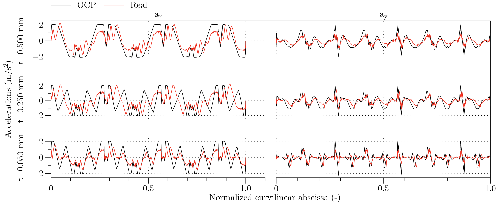

Introduction
Performance of machine tools depends on the algorithms that the Computer Numerical Control (CNC) implements for calculating feed rate profiles. This performance impacts both the accuracy of the tool movements (path tracking), and the efficiency in terms of process time (or average tool speed) .
Modern CNC systems are based on acceleration/deceleration control before interpolation. This is a software implementation, where the feed rate profiles (i.e. profiles of tangential speed) are generated before executing the motion interpolation on individual machine tool axes. Path tracking error for these CNC systems is theoretically limited by the performance of axes drivers, provided that the feed rate profiles are generated within the velocity, acceleration, and jerk feasibility limits for each axis.
A relatively open issue, though, remains when considering the cornering performance. Any sharp corner along the tool path represents a point of discontinuity in the velocity vector, so that the only physically feasible trajectory along the tool path must get to a full stop in the corners. For tool paths made by a succession of short segments, though, this approach greatly reduces the average feed rate compared to its nominal (or programmed) value.
This issue has been partially addressed by CNC manufacturers by allowing the CNC programmer to relax the path-following tolerance thus sacrificing the accuracy in favor of speed. It is the case of G61 (exact path mode) and G64 (continuous mode) G-code instructions , where the former requires an accurate positioning at nodes by forcing a full stop, whether the latter enable higher average speed by allowing some limited tracking error during the acceleration/deceleration phases at the expense of tracking accuracy and thanks to the look-ahead approach .
It has been shown that these solutions provide non-optimal trajectories both in terms of path tracking error, and in terms of minimum time . In fact, the calculation of the feed rate profile is performed by assuming that the maximum allowed tangential acceleration is that of the slowest axis, so that the part program can be executed with comparable results whichever is the orientation of the workpiece to be machined with respect to the machine tool axes—and this is by definition, since the feed rate profiles are calculated before interpolation.
Consequently, it is interesting to investigate the possibility to improve the machine tool performance by designing more advanced algorithms for feed rate profiling. Recent literature reports a number of works in manufacturing and in robotics field, proposing algorithms for motion interpolation of multiple axes aiming at improving time efficiency and path tracking accuracy. A comprehensive literature review on this subject has been proposed by Refs. .
It is worth noting that most of the available literature deals with minimum-time feedrate profiles generated for a pre-defined tool path (i.e. admitting zero path tracking error). Clever solutions have also been proposed on this matter that do not explicitly relate the path tracking accuracy to optimization parameters. In other words, the approach followed in these works is to calculate the optimal velocity profile satisfying a given set of limits, jerk included, assuming that the nominal tool path is the reference, but without enabling the perspective user to explicitly set a limit or constraint on the maximum allowable path tracking error, which is actually what really matters from the product quality point-of-view.
In a recent work the Authors adopted a different approach, where the whole trajectory is optimized, rather than the sole feed rate profile. This choice allows to define a lateral tolerance on the tool path—which can be physically related to the workpiece design tolerance. On this basis, the formulation of an optimal control problem (OCP) minimizing the time and yet respecting constraints on maximum jerks and accelerations, proved effective in comparison to the execution time for part programs run on standard CNCs.
Moving from this OCP application, the present work recalls the theory behind it and then shows how the optimized trajectory (i.e. the tool path together with the speed profile) can be used for preprocessing the original part program and generating a modified one, made by a sequence of short straight segments, whose track is a discretization of the optimized tool path, and whose feed rate are set to copy the optimized speed profile. The effectiveness of this approach is evaluated by comparing the cycle-time and the acceleration profiles of a reference part program with those of its optimized version.
Optimal Control Formulation
Model of System Dynamics
Taking as a reference the sketch in Fig. [fig:ref_frame], when \(s\) is the arc length, or curvilinear abscissa, the nominal trajectory can be described as a continuos function of \(s\): \[\begin{aligned} \label{eq:PN} {{\boldsymbol{P}}_n}(s) = {\begin{pmatrix} x_n(s) \\ y_n(s) \end{pmatrix}}\qquad \textrm{for $0\leq s \leq L$}\end{aligned}\] with piecewise continuos derivative. The derivative of the nominal trajectory \({{\boldsymbol{P}}_n}(s)\) is discontinuous on a finite number of points, corresponding to arc lengths \(0<s_1<s_2<\cdots<s_{m-1}<L\), where \(L\) is the total cluster length and \(m\) is the number of blocks in the cluster. Being \({\left\Vert{{\boldsymbol{P}}_n}'(s)\right\Vert}=1\), it is possible to define \(\theta_n(s)\), the angle of the nominal trajectory, as the angle that satisfies: \[\begin{aligned} {{\boldsymbol{P}}_n}'(s) &= {\begin{pmatrix} x_n'(s) \\ y_n'(s) \end{pmatrix}} = {\begin{pmatrix} \cos\theta_n(s) \\ \sin\theta_n(s) \end{pmatrix}},\end{aligned}\] whenever \(s\neq s_k\). Note that here and in the following the prime notation is used for space derivative, while the dot notation is used for the time derivative. The directions tangent and normal to the nominal trajectory are, respectively: \[\begin{aligned} {{\boldsymbol{T}}}(\theta_n) &= {\begin{pmatrix} \cos\theta_n \\ \sin\theta_n \end{pmatrix}}, \qquad {{\boldsymbol{N}}}(\theta_n) &= {\begin{pmatrix} -\sin\theta_n \\ \cos\theta_n \end{pmatrix}}.\end{aligned}\]
Local coordinate frame used for formulating the optimal control problem
On the basis of the vector \({{\boldsymbol{N}}}(\theta_n)\), and of the nominal trajectory \({{\boldsymbol{P}}_n}(s)\), one can define a curvilinear coordinate system, where a point \({{\boldsymbol{P}}}\) has the curvilinear coordinates \((s,n)\) when \({{\boldsymbol{P}}}\equiv {{\boldsymbol{P}}_n}(s)+n{{\boldsymbol{N}}}(\theta_n)\).
In this curvilinear coordinate system the tool center position can be described as: \[\begin{aligned} {{\boldsymbol{P}}}(t) = {{\boldsymbol{P}}_n}(s)+n{{\boldsymbol{N}}}(\theta_n),\qquad \begin{aligned}\label{eq:P} & \textrm{with} && s\equiv s(t)\\ & \textrm{and} && n\equiv n(t)\\ & \textrm{and} && \theta_n\equiv\theta_n(s(t)). \end{aligned}\end{aligned}\]
Notice that, in order of having an univocal definition for \({{\boldsymbol{P}}}(t_k)\) and due to the possible discontinuity in the derivative of nominal trajectory at nodal points, the curvilinear coordinate \(n(t)\) must be \(0\) for \(t=t_k\), where \(s(t_k)=s_k\). This implies that the tool center position is forced to cross the nominal trajectory at nodal points \({{\boldsymbol{P}}}(t_k)\). Along this path, the tool velocity \({{\boldsymbol{V}}}(t)=\dot{{\boldsymbol{P}}}(t)\) can thus be expressed as: \[\begin{aligned} {{\boldsymbol{V}}}(t) = {{\boldsymbol{T}}}(\theta_n)(1-n\kappa)\dot s + {{\boldsymbol{N}}}(\theta_n)\dot n, \quad \kappa(s)=\theta_n'(s)\end{aligned}\] where \(\kappa(s)\) is the curvature of the nominal trajectory.
The projections of the velocity vector in the local curvilinear reference frame, according to Fig. [fig:ref_frame], can be thus expressed as: \[\begin{aligned} \label{eq:pos} \begin{aligned} v_s(t) &= {{\boldsymbol{V}}}(t)\cdot{{\boldsymbol{T}}}(s)\, = (1-n\kappa)\dot s,\\ v_n(t) &= {{\boldsymbol{V}}}(t)\cdot{{\boldsymbol{N}}}(s) = \dot n, \end{aligned}\end{aligned}\] and the velocity vector itself can be rewritten as: \[\begin{aligned} \label{eq:V} {{\boldsymbol{V}}}(t) = {{\boldsymbol{T}}}(\theta_n)v_s + {{\boldsymbol{N}}}(\theta_n)v_n.\end{aligned}\] Analogously, the acceleration \({{\boldsymbol{A}}}(t)=\dot {{\boldsymbol{V}}}(t)\) can be expressed as: \[\begin{aligned} {{\boldsymbol{A}}}(t) = {{\boldsymbol{T}}}(\theta_n)(\dot v_s-\kappa v_n \dot s) + {{\boldsymbol{N}}}(\theta_n)(\dot v_n+\kappa v_s \dot s), \quad\end{aligned}\] and using again the local projections in the curvilinear reference frame: \[\begin{aligned} \label{eq:vel} \begin{aligned} a_s(t) &= {{\boldsymbol{A}}}(t)\cdot{{\boldsymbol{T}}}(s) = \dot v_s - \kappa \dot v_n s, \\ a_n(t) &= {{\boldsymbol{A}}}(t)\cdot{{\boldsymbol{N}}}(s) = \dot v_n + \kappa \dot v_s s, \\ {{\boldsymbol{A}}}(t) &= {{\boldsymbol{T}}}(\theta_n)a_s + {{\boldsymbol{N}}}(\theta_n)a_n. \end{aligned}\end{aligned}\] Finally, the jerk \({{\boldsymbol{J}}}(t)=\dot {{\boldsymbol{A}}}(t)\) can be expressed as: \[\begin{aligned} {{\boldsymbol{J}}}(t) = {{\boldsymbol{T}}}(\theta_n) (\dot a_s - \kappa a_n \dot s) + {{\boldsymbol{N}}}(\theta_n)(\dot a_n + \kappa a_s \dot s),\quad\end{aligned}\] and, by using again the local projections in the curvilinear reference frame: \[\begin{aligned} \label{eq:acc} \begin{aligned} j_s(t) &= {{\boldsymbol{J}}}(t)\cdot{{\boldsymbol{T}}}(s) = \dot a_s - \kappa v_s \dot s,\\ j_n(t) &= {{\boldsymbol{J}}}(t)\cdot{{\boldsymbol{N}}}(s) = \dot a_n + \kappa v_s \dot s, \\ {{\boldsymbol{J}}}(t) &= {{\boldsymbol{T}}}(\theta_n)j_s + {{\boldsymbol{N}}}(\theta_n)j_n \end{aligned}\end{aligned}\] By combining Eqs. [eq:pos], [eq:vel], and [eq:acc], one obtains the following system of ordinary differential equations (ODE): \[\begin{aligned} \label{eq:ODE} \begin{aligned} \dot s &= v_s/(1-\kappa n), & \quad \dot n &= v_n, \\ \dot v_s &= a_s + \kappa v_n \dot s, & \quad \dot v_n &= a_n - \kappa v_s \dot s, \\ \dot a_s &= j_s + \kappa a_n \dot s, & \quad \dot a_n &= j_n - \kappa a_s \dot s \end{aligned}\end{aligned}\] whose solution represents the tool trajectory determined by the jerk history. This ODE is valid wherever \(s(t)\neq s_k\), i.e. except for the discontinuity points of the nominal trajectory. In correspondence with these discontinuity points the actual trajectory \({{\boldsymbol{P}}}(t)\) must be continuous: \[\begin{aligned} {{\boldsymbol{P}}}(t_k^-) = {{\boldsymbol{P}}}(t_k^+),\quad {{\boldsymbol{V}}}(t_k^-) = {{\boldsymbol{V}}}(t_k^+),\quad {{\boldsymbol{A}}}(t_k^-) = {{\boldsymbol{A}}}(t_k^+)\end{aligned}\] where the superscripts \(+\) and \(-\) represent the quantities on the right (i.e. after) and on the left (i.e. before) side of a node, respectively.
As a consequence of the continuity equations and of Eq. [eq:P], and by defining \(\theta_k^\pm=\theta_n(s(t_k^\pm))\), it follows that: \[\begin{aligned} {{\boldsymbol{P}}_n}(s_k)+n(t_k^-){{\boldsymbol{N}}}(\theta_k^-) = {{\boldsymbol{P}}_n}(s_k)+n(t_k^+){{\boldsymbol{N}}}(\theta_k^+),\end{aligned}\] which, unless \({{\boldsymbol{N}}}(\theta_k^-)={{\boldsymbol{N}}}(\theta_k^+)\), implies that: \[\begin{aligned} \label{eq:cont_pos} n(t_k^-)=n(t_k^+)=0\end{aligned}\] i.e. that the tool center passes exactly through the node, as shown in Fig. [fig:ref_frame] (point \(s_k\)).
From Eq. [eq:V], the continuity condition implies that \[\begin{aligned} \begin{aligned} v_s(t_k^+) =& {{\boldsymbol{T}}}(\theta_k^+)\cdot{{\boldsymbol{T}}}(\theta_k^-)v_s(t_k^-) + {{\boldsymbol{T}}}(\theta_k^+)\cdot{{\boldsymbol{N}}}(\theta_k^-)v_n(t_k^-) \\ v_n(t_k^+) =& {{\boldsymbol{N}}}(\theta_k^+)\cdot{{\boldsymbol{T}}}(\theta_k^-)v_s(t_k^-) + {{\boldsymbol{N}}}(\theta_k^+)\cdot{{\boldsymbol{N}}}(\theta_k^-)v_n(t_k^-) \end{aligned}\end{aligned}\] The last pair of equations, by using the formulas \[\begin{aligned} \begin{aligned} \cos(a-b)&= \cos(a)\cos(b)+\sin(a)\sin(b)\\ \sin(a-b)&= -\cos(a)\sin(b)+\sin(a)\cos(b) \end{aligned}\end{aligned}\] and by defining \(\Delta\theta_k = \theta_k^+-\theta_k^-\), can be finally expressed as: \[\begin{aligned} \begin{aligned}\label{eq:cont_vel} v_s(t_k^+) &= v_s(t_k^-)\cos\Delta\theta_k + v_n(t_k^-)\sin\Delta\theta_k\,, \\ v_n(t_k^+) &= v_n(t_k^-)\cos\Delta\theta_k- v_s(t_k^-)\sin\Delta\theta_k\,. \end{aligned}\end{aligned}\] After analogous operations, from Eq. [eq:vel] one can obtain the corresponding continuity equations for the two acceleration components: \[\begin{aligned} \begin{aligned}\label{eq:cont_acc} a_s(t_k^+) &= a_s(t_k^-)\cos\Delta\theta_k + a_n(t_k^-)\sin\Delta\theta_k\,, \\ a_n(t_k^+) &= a_n(t_k^-)\cos\Delta\theta_k- a_s(t_k^-)\sin\Delta\theta_k\,. \end{aligned}\end{aligned}\]
Coordinate change
The formulation of the tool center position above detailed cannot be used for optimization purposes, for the time at which the tool reaches the discontinuity points \(t_k\)—i.e. the times at which \(s(t_k)=s_k\)—are not known a priory. To overcome this issue, a coordinate change is here introduced.
Lets consider a set of segments in the part program, for which the initial and final conditions are known (typically known position at zero speed). Let \(L_k\) be the length of the \(k\)-th segment of the nominal tool path, and \(T_k\) the time spent for traveling from the beginning to the end of this segment. Set also \(t_0=0\) and \(s(t_{m})=L\), being \(t_{m}=t_f\) the time at the very end of the set of segments, and \(m\) is the number segments (being \(m-1\) the number of discontinuity points). With these definitions, the coordinate \(\zeta\) can be defined as: \[\begin{aligned} \label{eq:chcoor} \zeta &=\zeta(t) = s_{k-1} + (t-t_{k-1})\frac{L_k}{T_k},\qquad t_{k-1} \leq t < t_{k},\end{aligned}\] satisfying \(\zeta(t_{k-1})=s_{k-1}\), and \(\zeta(t_k)=s_{k-1}+L_k=s_k\).
Coordinate change
By using \(\zeta\) as independent coordinate, the set of ODE in Eq. [eq:ODE] becomes (for \(\zeta \in (s_{k-1},s_k)\)): \[\begin{aligned} \begin{aligned}\label{eq:ODE:zeta} s'(\zeta) &= \left(\frac{T_k}{L_k}\right)\dfrac{v_s(\zeta)}{1-n(\zeta)\kappa(s(\zeta))}, \\ n'(\zeta) &= (T_k/L_k)\,v_n(\zeta), \\ v_s'(\zeta) &= (T_k/L_k)\,a_s(\zeta) + \kappa(s(\zeta))\,v_n(\zeta)\,s'(\zeta),\\ v_n'(\zeta) &= (T_k/L_k)\,a_n(\zeta) - \kappa(s(\zeta))\,v_s(\zeta)\,s'(\zeta),\\ a_s'(\zeta) &= (T_k/L_k)\,j_s(\zeta) + \kappa(s(\zeta))\,a_n(\zeta)\,s'(\zeta),\\ a_n'(\zeta) &= (T_k/L_k)\,j_n(\zeta) - \kappa(s(\zeta))\,a_s(\zeta)\,s'(\zeta) \end{aligned}\end{aligned}\] where the prime operator indicates the first derivative with respect to \(\zeta\). The last set of equations is completed with the initial (i.e. \(\zeta=0\)) boundary conditions: \[\begin{aligned} \begin{aligned}\label{eq:ini:BC} s(0) &=0,\quad &v_s(0) &=f^-,\quad &a_s(0) &=0, \\ n(0) &=0,\quad &v_n(0) &=0,\quad &a_n(0) &=0, \end{aligned}\end{aligned}\] and with the final (i.e. \(\zeta=L\)) boundary conditions: \[\begin{aligned} \begin{aligned}\label{eq:end:BC} s(L) &=L,\quad &v_s(L) &=f^+,\quad &a_s(L) &=0, \\ n(L) &=0,\quad &v_n(L) &=0,\quad &a_n(L) &=0, \end{aligned}\end{aligned}\] where \(f^-\) and \(f^+\) are the feed rate at the beginning and at the end of the set of segments—typically 0.
Finally, the interface conditions of Eqs. [eq:cont_pos], [eq:cont_vel], and [eq:cont_acc]—after the change of coordinates defined in Eq. [eq:chcoor]—become: \[\begin{aligned} \begin{aligned}\label{eq:compat} s(s_k^+) &= s(s_k^-) = s_k \\ n_s(s_k^+) &= n_s(s_k^-) = 0 \\ v_s(s_k^+) &= v_s(s_k^-)\cos\Delta\theta_k + v_n(s_k^-)\sin\Delta\theta_k\,, \\ v_n(s_k^+) &= v_n(s_k^-)\cos\Delta\theta_k- v_s(s_k^-)\sin\Delta\theta_k\,, \\ a_s(s_k^+) &= a_s(s_k^-)\cos\Delta\theta_k + a_n(s_k^-)\sin\Delta\theta_k\,, \\ a_n(s_k^+) &= a_n(s_k^-)\cos\Delta\theta_k- a_s(s_k^-)\sin\Delta\theta_k\,. \end{aligned}\end{aligned}\]
Formulation of the Optimal Control Problem
Informally, the Optimal Control Problem (OCP) can be stated as follows: one wants to calculate the continuous trajectory \({{\boldsymbol{P}}}(t)={{\boldsymbol{P}}}(s(t),n(t))\), where \({{\boldsymbol{P}}}(s,n)={{\boldsymbol{P}}_n}(s)+n{{\boldsymbol{N}}}(\theta_n(s))\), which approximates the nominal path \({{\boldsymbol{P}}_n}(s)\) given a prescribed tracking tolerance and by moving as close as possible to the nominal feed rate \(f(s)\), which in turn is a piecewise constant function representing the nominal feed rate for each positioning block in the part program.
Since the path tracking error, which is the distance between \({{\boldsymbol{P}}_n}(s)\) and \({{\boldsymbol{P}}}(s,n)\), is \({|n|}\) by definition, the trajectory \({{\boldsymbol{P}}}(t)\) must satisfy \(n_{\min} \leq n(t) \leq n_{\max}\), where \(n_{\max} \geq 0\) and \(n_{\min} \leq 0\) are the maximum allowed path tracking error on the left and right side of the tool path, respectively, and where \(n_{\max}-n_{\min} > 0\). It is also worth noting that, as suggested by the same figure, the width of the error band can assume different values for each path segment, thus allowing fine-tuning of local accuracy and overall time-efficiency.
The most natural definition for a target function to be used in the trajectory planning problem is time minimization, i.e.: \[\begin{aligned} \textrm{Minimize:}\qquad \int_{0}^{t_f} 1{\,\mathrm{d}t}=t_f,\end{aligned}\] subject to the constraint on the velocity norm \(f(s(t))=\sqrt{v_s(t)^2+v_n(t)^2}\), which must not be larger than the nominal feed rate: \(f^*(s(t)) \geq f(s(t))\). However, the numerical solution of the optimization problem defined by this target function proved computationally expensive.
A different formulation that approximates the minimum time problem is the minimization of the distance between the actual feed rate, \(f(s(t))=\sqrt{v_s(t)^2+v_n(t)^2}\), and the nominal feed rate, \(f^*(s(t))\). A scaled version of this distance is the following performance index: \[\begin{aligned} \textrm{Minimize:}\qquad \int_{0}^{t_f} \Bigg( \dfrac{f(s(t))}{f^*(s(t))} -1\Bigg)^2{\,\mathrm{d}t}.\end{aligned}\] Finally, to avoid excessive oscillations above the nominal feed rate, the actual feed rate must satisfy \(f(s(t))\leq f_{\max}\), where \(f_{\max} \geq f^*(s)\) is the maximum feed rate allowed.
The Optimal Control Problem, by using \(\zeta\) coordinate, takes the form:
find positive parameters \(T_1\), \(T_2\), …, \(T_{m}\) and control history \(j_s(\zeta)\), \(j_n(\zeta)\) that minimize the performance index: \[\begin{aligned} \label{eq:target} \sum_{k=1}^m \left(\frac{T_k}{L_k}\right) \int_{s_{k-1}}^{s_k} \left( \frac{f(s(\zeta))}{f^*(s(\zeta))} -1\right)^2{\,\mathrm{d}\zeta}, \end{aligned}\]
where \(v_s(\zeta)\) and \(v_n(\zeta)\) are the solutions of the ODE in Eq. [eq:ODE:zeta] with boundary conditions of Eq. [eq:ini:BC]–[eq:end:BC] and internal or interface conditions of Eq. [eq:compat];
additional constraints on lateral position, velocity, acceleration, and jerk are also included: \[\begin{aligned} \label{eq:ineq} \begin{aligned} n_{\min} \leq n(\zeta) \leq n_{\max}, \quad & v_s(\zeta)^2+v_n(\zeta)^2\leq f_{\max}^2,\\ |a_s(\zeta)|\leq a_{s,\max}\,, \quad & |a_n(\zeta)|\leq a_{n,\max}\,, \\ |j_s(\zeta)| \leq j_{s,\max}\,, \quad & |j_n(\zeta)| \leq j_{n,\max}\,, \end{aligned} \end{aligned}\]
Note that Eq. [eq:ineq] limits acceleration and jerk within a rectangle in \((s,n)\) coordinate. It is also possible to limit their values within a circle (i.e. so that they are limited in modulus): \[\begin{aligned} a_s(\zeta)^2+a_n(\zeta)^2\leq a_{\max}^2\,,\quad j_s(\zeta)^2+j_n(\zeta)^2\leq j_{\max}^2\,, \end{aligned}\] or within a rectangle in \((x,y)\): \[\begin{aligned} \begin{aligned} |a_s(\zeta)\cos(\theta)-a_n(\zeta)\sin\theta|&\leq a_{x,\max}\,, \\ |a_s(\zeta)\sin(\theta)+a_n(\zeta)\cos\theta|&\leq a_{y,\max}\,, \\ |j_s(\zeta)\cos(\theta)-j_n(\zeta)\sin\theta|&\leq j_{x,\max}\,, \\ |j_s(\zeta)\sin(\theta)+j_n(\zeta)\cos\theta|&\leq j_{y,\max}\,. \\ \end{aligned} \end{aligned}\] Other kind of constraints can be set depending on the characteristic of the machine tool dynamics or on the purpose of the optimization.
Solution is obtained through a high-performance in-house implementation of an indirect solver for optimal control problems .
It should be noted that the above formulation does not take into account the convexity of the problem. In fact — altought for simpler problems a proof of convexity can be provided with linear boundaries conditions — the much higher complexity of this formulation makes the same proof a formidable and still open issue. Nevertheless, the implementation of this formulation solves the problem of reducing the execution time of an existing part program, and it is still possibile to check, after the execution of the optimization algorithm, the first and the second variation with respect to solution in order to verify whether the solution corresponds a minimum or not. The analitycal form of such conditions are not provided here for the sake of brevity.
Experimental Validation
Test tool path. It consists in 17 straight segments and 3 circular arcs. Detail shows the difference between nominal and actual toolpath, as measured by the CNC oscilloscope
Demonstrating the effectiveness of the approach described in the previous section would require to bypass the CNC of a real machine tool. Given that machine tools are rather complex and closed systems, Authors decided to follow a different approach, yet opening some interesting possibilities from a practical point of view. In short, the idea is to start from a standard part program (as the one producing the tool path reported in Fig. [fig:test_toolpath]), calculate an optimized trajectory by applying the OCP approach above described, and finally generate a new part program, where the original segments have been replaced with (typically much-) shorter segments that match the optimized tool path, and have a nominal feed rate set to the optimal one. The following subsections describe how this new part program can be generated, and how its efficiency has been tested comparing both execution time and motion smoothness when a modern CNC machine tool runs the original and the optimized part program.
Experimental setup: the machine tool has X and Y axes on the head, Z on the table; a triaxial capacitive accelerometer is mounted on the moving head.
Nodes resampling
The solution of the OCP is stored as a sequence of points. The distance between consequent points is often smaller than the average precision of an industrial machine tool (i.e. \(5\) \(\mu\)m). Before generating the output part program, the set of points \(\mathbb{P}\) has to be reduced. Reduction is performed by a post-processing script that takes as input the OCP solution: \[\begin{aligned} \mathbb{P} = \left\{ {{\boldsymbol{P}}}(t) : \textrm{OCP solution for}~{{\boldsymbol{P}}_n}(s) \right\}\end{aligned}\] and performs three steps of reduction:
minimum distance elimination;
completely aligned point elimination;
chordal distance elimination.
While implementation of the first step is trivial, the second and the third steps rely on the idea of a circle that passes through three points. Given a set of three non-coincident points \({{\boldsymbol{P}}}_1,\,{{\boldsymbol{P}}}_2,\,{{\boldsymbol{P}}}_3\), the center \({{\boldsymbol{P}}}_c\) and the radius \(R\) of the circumference are the solution of the problem: \[\begin{aligned} \left( P_{i,x} - P_{c,x} \right)^2 + \left( P_{i,y} - P_{c,y} \right)^2 = R^2,\quad\left\{ \begin{aligned} i &= 1\dots 3\\ R &\geq 0 \end{aligned}\right.\end{aligned}\] Solution exists and it is unique. If three points are aligned, \(R \rightarrow +\infty\). This is the second elimination criterion.
Circle through three points
Chordal distance is defined as distance between point \({{\boldsymbol{P}}}_2\) and intersection point \({{\boldsymbol{P}}}_{\zeta}\). The position of intersection point is given by solution of: \[\begin{aligned} \begin{aligned} \left(P_{3,x} - P_{1,x}\right) \left(P_{\zeta,y} - P_{1,y}\right) & = \left(P_{3,y} - P_{1,y}\right) \left(P_{\zeta,x} - P_{1,x}\right) \\ \left(P_{2,x} - P_{c,x}\right) \left(P_{\zeta,y} - P_{c,y}\right) & = \left(P_{2,y} - P_{c,y}\right) \left(P_{\zeta,x} - P_{c,x}\right) \\ \end{aligned}\end{aligned}\] which can be formulated in matrix form as \(\mathbf{A} {{\boldsymbol{P}}}_{\zeta} = \mathbf{b}\), easy to solve analytically. The existence of \(\mathbf{A}^{-1}\) is ensured by problem hypothesis (points not aligned). It should be clear now that we are using chordal distance as an approximation of the curvature. If this curvature is below a certain threshold then point \({{\boldsymbol{P}}}_2\) is eliminated, and \({{\boldsymbol{P}}}_1\) and \({{\boldsymbol{P}}}_3\) are considered aligned, as a third elimination criterion.
Description of other, more complex re-interpolation algorithms are omitted for the sake of brevity.
Results
The machine tool used for testing is a Deckel-Maho DMU60-T with a Heidenhain iTNC530 controller, schematically shown in Fig. [fig:machine]. The machine has a maximum feed rate of \(20\) m/min on the X and Y axes and \(10\) m/min on the Z axis, though the latter was not moving during the tests. A triaxial capacitive accelerometer was mounted on the machine moveable head and used to record head accelerations with a sample rate of \(5\) kHz. Finally, the on-board software oscilloscope of the iTNC530 was used for recording time (with a sampling period of \(3.6\) ms), instant position and acceleration of X and Y axes, actual feed rate, and block number. part program were executed in-air (no workpiece) and with non-rotating spindle, in order to only measure accelerations produced by the two feed axes (X and Y).
The toolpath represented in Fig. [fig:test_toolpath] has beed encoded into an ISO G-code part program, which has been pre-processed according to the OCP problem and the nodes resampling procedure above described. Constraints on the OCP have been set to the limits of the DMU60-T machine, according to the identification reported in Ref. . Several combinations of optimization parameters and node reresampling parameters have been tested. Due to space restrictions, only the more interesting cases are hereafter reported, and namely three combinations of tool path tracking tolerance: \(50\) \(\mu\)m, \(250\) \(\mu\)m, and \(500\) \(\mu\)m). Eventually, the original part program and the pre-processed ones have been executed on a CNC machine tool.
It is worth noting that the system here proposed is of special interest for high speed movements, i.e. when the nominal feed rate is close or equal to the machine limit, since under these conditions most of the cycle time is spent in accelerating or decelerating the axes, and a constant value of the actual feed rate is seldom maintained for the larger part of each positioning block. For this reason, the tests were performed at relatively high feed rates of 5, 15, and \(20\) m/min, the latter corresponding to the machine limit.
Nominal tool path (black) compared with the real tool paths as reported by the on-board CNC oscilloscope with three different tracking tolerances
Figure [fig:chart] compares the nominal tool path with the actual tool paths recorded by the onboard oscilloscope for the three selected tracking tolerances. Figure [fig:tracking] shows how the actual tool paths comply with selected tracking tolerance limits, with the notable exception of some short overshoots in the case of the smaller tolerance, which is related to the fact that the OCP solver implements the constraints on tracking error as penalty functions.
Path tracking errors compared with OCP tracking tolerances
Actual feed rate as measured by the oscilloscope compared with OCP result, plotted against normalized nominal curvilinear abscissa for three different tracking tolerances
Accelerations along X and Y axes, as measured by the accelerometer (red) and as calculated by the OCP. Square boxes represent the constraints set to the OCP
Longitudinal and lateral accelerations,calculated by OCP. Square boxes represent the constraint set in longitudinal and lateral directions.


Comparison between execution in air and in material, with feed \(18\) m/min and tolerance \(500\) \(\mu\)m
| feed rate | tolerance | execution time | change | OCP exec. time |
| (m/min) | (mm) | (s) | (%) | (s) |
| \(20.00\) | nominal p.p. | \(4.67\) | – | \(-\) |
| \(20.00\) | \(0.50\) | \(3.98\) | \(-14.8\) | \(3.02\) |
| \(20.00\) | \(0.25\) | \(4.42\) | \( -5.2\) | \(3.13\) |
| \(20.00\) | \(0.05\) | \(4.97\) | \( 6.4\) | \(3.69\) |
| \(15.00\) | nominal p.p. | \(5.22\) | – | \(-\) |
| \(15.00\) | \(0.50\) | \(4.21\) | \(-19.4\) | \(3.18\) |
| \(15.00\) | \(0.25\) | \(4.50\) | \(-13.9\) | \(3.29\) |
| \(15.00\) | \(0.05\) | \(4.99\) | \( -4.4\) | \(3.71\) |
| \(5.00\) | nominal p.p. | \(6.93\) | – | \(-\) |
| \(5.00\) | \(0.50\) | \(6.67\) | \(-3.6\) | \(6.27\) |
| \(5.00\) | \(0.25\) | \(7.85\) | \(13.4\) | \(6.36\) |
| \(5.00\) | \(0.05\) | \(8.21\) | \(18.5\) | \(6.40\) |
Comparison for time efficiency metric \(\eta\)
It is evident that the optimized part program follows a smoother trajectory that results in smaller accelerations, as can be noted by observing the acceleration components \(a_x\) and \(a_y\) reported in Fig. [fig:accelerations]. At the same time—and what really matters—the execution time is significantly reduced as can be observed from data in Tab. [tab:times], with gains ranging from 5 to 20% in the most relevant cases. Moreover, is should be noted that the execution times obtained by the OCP solution are always faster than the nominal case, meaning that the complete substutution of current CNC profiling/interpolation scheme with one based on the OCP described in Ref. would ensure significant advantages in every condition. The different performance of optimization and real execution has been assessed using time efficiency metrics , defined as ratio between minimum theoretical execution time and effective execution time: \[\begin{aligned} \label{eq:time_eff} \eta = \dfrac{L}{f\,T}\end{aligned}\]
Time efficiency for both OCP and real execution time are compared in Fig. [fig:timecomp], while timing are reported in Table [tab:times].
On the negative side, Fig. [fig:feed] remarks how the CNC own feed rate profiling is significantly reducing the actual feed rate with respect to that resulting from the OCP solution, thus somehow limiting the effectiveness of the proposed solution in terms of minimum attainable execution time. Those effects could also be seen in terms of optimized and actual accelerations. Even if the optimized solution lays inside experimentally identified boundaries (Fig. [fig:OCP_accelerations]), sometimes during the tests it appears to be further limited by the CNC, Fig. [fig:osci_accel].
In Fig. [fig:mat_accel] a comparison of accelerations between two executions of the same optimized part program — in-air and in-material — is presented. The operation is the same toolpath as in Fig. [fig:test_toolpath], with a nominal feed rate \(18\) m/min and a tolerance of \(500\) \(\mu\)m. It is clear that presence of material does not change the foundamental dynamic of execution, but it also gives only an higher frequency contribution.
Conclusion
This work shows how a feed rate profiling algorithm for motion interpolation of cartesian axes based on application of Optimal Control Theory — and detailedly described in a previous Authors’ work — can be exploited for rewriting a standard G-code part program. While the original work described a system aimed at replacing the conventional CNC profiler/interpolator, the present work describes an offline preprocessing software for improving a given tool path according to the OCP solution.
Such program preprocessing allows to execute programs in less time and with reduced accelerations (and thus vibrations). Nevertheless, the actual axes motion is still not as effective as that calculated by the OCP solution, which remains the most effective approach for improving the efficiency of standard CNC profilers/interpolators.
16 P. Bosetti and E. Bertolazzi: “feed rate and trajectory optimization for CNC machine tools”, Robotics and Computer-Integrated Manufacturing, 30, 6, 667-677, (December, 2014)
A. Jayendran: “CNC machines (CNC Maschinen)”, Mechanical Engineering, Teubner, 177–192, (2006)
Y. Altintas and W. K. Munasinghe: “A Hierarchical Open-Architecture CNC System for Machine Tools”, Annals of CIRP, 43, 1, 349–354, (1994)
B. Sencer, Y. Altintas, and E. Croft: “Feed optimization for five-axis CNC machine tools with drive constraints”, International Journal of Machine Tools and Manufacture, 48, 7–8, 733–745, (2008)
A. Gasparetto, A. Lanzutti, R. Vidoni, and V. Zanotto: “Experimental validation and comparative analysis of optimal time-jerk algorithms for trajectory planning”, Robotics and Computer-Integrated Manufacturing, 28, 2, 164–181, (2012)
J. Dong, P. Ferreira, and J. Stori: “feed rate optimization with jerk constraints for generating minimum-time trajectories”, International Journal of Machine Tools and Manufacture, 47, 12–13, 1941–1955, (2007)
J. Dong and J. A. Stori: “Bidirectional Scan Algorithm for Constrained feed rate Optimization”, Journal of Dynamic Systems, Measurement, and Control, 128, 379–390, (June, 2006)
J. Dong and J. Stori: “A generalized time-optimal bidirectional scan algorithm for constrained feed rate optimization”, Journal of Dynamic Systems, Measurement and Control, Transactions of the ASME, 128, 2, 379–390, (2006)
D. Verscheure, B. Demeulenaere, J. Swevers, J. De Schutter, and M. Diehl: “Time-energy optimal path tracking for robots: a numerically efficient optimization approach”, Advanced Motion Control, 2008. AMC ’08. 10th IEEE International Workshop on, 727–732, (2008)
Z. Shiller: “On singular time-optimal control along specified paths”, IEEE Transactions on Robotics and Automation, 10, 4, 561-566, (1994)
X. Beudaert, S. Lavernhe, and C. Tournier: “Feedrate interpolation with axis jerk constraints on 5-axis NURBS and G1 tool path”, International Journal of Machine Tools and Manufacture, 57, 0, 73–82, (2012)
J. Jahanpour and B. Imani: “Real-time P-H curve CNC interpolators for high speed cornering”, The International Journal of Advanced Manufacturing Technology, 39, 302–316, (2008)
Y. Altintas and N. Erol: “Open Architecture Modular Tool Kit for Motion and Machining Process Control”, CIRP Annals - Manufacturing Technology, 47, 1, 295–300, (1998)
B.-F. Ju, X. Bai, J. Chen, and Y. Ge: “Design of Optimal Fast Scanning Trajectory for the Mechanical Scanner of Measurement Instruments”, Scanning, (2013)
K. Zhang, C.-M. Yuan, X.-S. Gao, and H. Li: “A greedy algorithm for feedrate planning of CNC machines along curved tool paths with confined jerk”, Robotics and Computer-Integrated Manufacturing, 28, 4, 472–483, (2012)
S.-H. Suh, S. K. Kang, D.-H. Chung, and I. Stroud: “Theory and Design of CNC Systems”, Springer, (2008)
A. E. Bryson, Y. Ho, “Applied optimal control: optimization, estimation and control”, CRC Press, (1975)
F. Biral, E. Bertolazzi, P. Bosetti, “Notes on Numerical Methods for Solving Optimal Control Problems”, IEEJ Transaction on Industry Applications, (2015)
Original part program
Here an example of part program used for simulations is reported. The optimized version (omitted for a sake of brevity) has part included between ; { optimize start } and ; { optimize end } modified.
The next example optimize the code with tolerance set to \(250\) \(\mu\)m.
%input_f20000 G71 *
N10 ; SIMPLE TEST
N20 ; AUTHOR - Paolo Bosetti
; { generator }
N60 G00 G90*
N80 T0*
N90 S1600 F20000*
N100 X-10 Y+0*
N110 G01 Z+0*
;N111 G62 T0.5 P01 1*
N112 G38*
; { optimize start tol=250u vnorm=max mesh=500 }
N120 G91 X+30 Y+2*
N125 X+30 Y-2*
N130 G03 Y+10 R+5*
N140 G01 X-30 Y+2*
N145 X-30 Y-2*
N150 G91 Y+10*
N160 G91 X+30 Y+2*
N165 X+30 Y-2*
N170 G91 G03 Y+10 R+5*
N180 G01 X-30 Y+2*
N185 X-30 Y-2*
N190 G91 Y+10*
N200 G91 X+30 Y+2*
N205 X+30 Y-2*
N210 G91 G03 Y+10 I+0 J+5*
N220 G01 X-30 Y+2*
N225 X-30 Y-2*
N230 G91 Y+10*
N240 G91 X+30 Y+2*
N245 X+30 Y-2*
; { optimize end }
N246 G38*
N250 G00*
N260 T0 M30*
N99999999 %input_f20000 G71 *